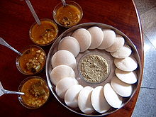

Idli

Idli or idly is a type of savoury rice cake, originating from South India, popular as a breakfast food in Southern India and in Sri Lanka. The cakes are made by steaming a batter consisting of fermented black lentils (de-husked) and rice. The fermentation process breaks down the starches so that they are more readily metabolised by the body.
Idli has several variations, including rava idli, which is made from semolina. Regional variants include sanna of Konkan. It is naturally vegetarian, vegan, gluten-free and makes for one of the healthiest breakfast options served with Sambar and Coconut Chutney.
Ingredients
- Lentils 1/2 Cup of Urad dal, 2 Tablespoon of bengal gram.
- Rice 11/2 of raw rice. Though you can use any kind of non sticky rice, you can use combination of raw rice & idli rice/parboiled rice.
- Fenugreek seeds1/2 Tablespoon
How to make Idli
Make idli batter
- Add 1/2 cup urad dal, 2 tablespoon bengal gram and 1/2 teaspoon Fenugreek seeds to a large bowl. Add 11/2 cups rice to another bowl.
- Rinse dal thoroughly a few times adn soak in lits of filtered water for 4 hours. During cold weather they can be soaked up to 6 hours or even overnight.
- Rinse rice too a few times until the water uns clear. Soak in enough filtered water for 4 hours. Same here as well, During cold weather they can be soaked up to 6 hours or even overnight.
- Drain the water completely from dal and pour 3/4cup cold filtered water.
- Blend until smooth, frothy and bubbly. If needed add more water. I add another 2 to 4 tablespoons water. But do not make it thin or runny. It must be a thick batter yet pouring consistency.
- Transfer the batter to a large bowl. Drain rice completely and add to blender jar. Pour 1/2cup water.
- Blend to slightly coarse batter.
- Add the rice batter to the urd dal batter. Mix both of them well. The warmth in the hand is said to help in fermentation if want you may use your hand. The prepared batter must ve of pouring consistency yet thick not runny.
- Cover and ferment it in a warm place until the batter rises and turns bubbly. If you live in a warm region, you can leave it on the counter overnight. It may take anywhere form 5 to 16 hours depending on the temperature.
- Do not over ferment the idli batter as it turns sour and the batter is not so good to spread on the griddle.
How to make Idli
- Grease or brush the idli mould with oil all over evenly. Gently and lightly swirl the batter. Don’t overdo. Now with a spoon pour portions of the batter in the greased idli moulds.
- Take your idli steamer or pressure cooker or electric cooker or Instant pot. Add some 2 to 2.5 cups water and heat the water until it comes to a light boil. Keep the idli mould in the steamer or pressure cooker. Steam for 12 to 15 minutes. Timing will vary depending on the kind of equipment you have used. If using a pressure cooker, then cover the pressure cooker with its lid. Remove the vent weight/whistle from the lid. Steam the idlis for approx 12 to 15 minutes.
- Check for doneness by carefully inserting a bamboo skewer or knife. If it does not come out clean, then keep again for a few more minutes. When done remove the idli mould from the cooker. Don’t overcook as then they become dry. Dip a spoon or butter knife in water and slid them through the idlis. Remove and place the idlis in a warm container like a casserole.
- Serve Idli hot or warm with sambar and coconut chutney.